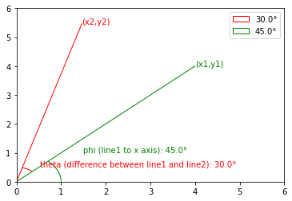

def apply_transform(coords_2d, xform):
assert coords_2d.shape[1] == 2
assert xform.shape[0] == 3
assert xform.shape[1] == 3
coords_full = np.concatenate([coords_2d, np.ones((coords_2d.shape[0], 1))], axis=1)
assert coords_full.shape[0] == coords_2d.shape[0]
assert coords_full.shape[1] == 3
return xform.dot(coords_full.transpose()).transpose()[:,:2]transforms
2D Matrix transformations to manipulate a series of
(x,y) coordinates.
2D Affine Transformations
For manipulating sets of stroke-3 coordinates, I often needed to transform the coordinates - rescaling, rotating, moving, etc.
2D affine transformations are perfect for this. Each transformation is expressed as a matrix, and is applied by performing matrix multiplication against the 2D matrix of coordinates (with a column of 1 values concatenated next to x and y values).
apply_transform
apply_transform (coords_2d, xform)
Consider a sample set of x,y coordinates:
| x | y |
|---|---|
| 0 | 0 |
| 0.5 | 0.5 |
| 1 | 1 |
The simplest affine transformation is the identity.
Multiplying the 2D coords by the following matrix will output an identical set of coordinates:
1 0 0
0 1 0
0 0 1def identity_xform():
return np.array([
[1, 0, 0],
[0, 1, 0],
[0, 0, 1]])identity_xform
identity_xform ()
sample_coords = np.array([
[0.0,0.0],
[0.5,0.5],
[1.0,1.0],
])
test(apply_transform(sample_coords, identity_xform()),
sample_coords,
np.array_equal)Scaling a set of coordinates by sx in the x direction and sy in the y direction is as easy as multiplying by:
sx 0 0
0 sy 0
0 0 1def scale_xform(sx, sy):
return np.array([
[sx, 0, 0],
[0, sy, 0],
[0, 0, 1]])scale_xform
scale_xform (sx, sy)
scaled_coords_2x_3y = np.array([
[0.0,0.0],
[1.0,1.5],
[2.0,3.0],
])
test(apply_transform(sample_coords, scale_xform(sx=2.0, sy=3.0)),
scaled_coords_2x_3y,
np.array_equal)Translating a set of coordinates by tx in the x direction and ty in the y direction uses the following matrix.
1 0 tx
0 1 ty
0 0 1def translate_xform(tx, ty):
return np.array([
[1, 0, tx],
[0, 1, ty],
[0, 0, 1]])translate_xform
translate_xform (tx, ty)
translated_coords_2x_3y = np.array([
[2.0,3.0],
[2.5,3.5],
[3.0,4.0],
])
test(apply_transform(sample_coords, translate_xform(tx=2.0, ty=3.0)),
translated_coords_2x_3y,
np.array_equal)To rotate a set of 2D coordinates by n degrees, we first convert the desired angle of rotation from degrees to a value in radians, theta.
Consider a point (x1, y1) at (4, 4) that I want to rotate by 30 degrees around the origin. If I make a line to the origin with length r, the angle between line1 and the x axis, which I’ll call phi, is 45 degrees.
x1 = r * cos(phi) = 4
y1 = r * sin(phi) = 4If I want to rotate it by 30 degrees, its final position at point (x2, y2) will be 45 + 30 = 75 degrees from the x-axis, equivalent to phi + theta.
x2 = r * cos(phi + theta)
y2 = r * sin(phi + theta)
Since cos(a + b) = cos(a)*cos(b) - sin(a)*sin(b) and sin(a + b) = sin(a)*cos(b) + cos(a)*sin(b), this breaks down into:
x2 = r * cos(phi + theta)
= r * cos(phi) * cos(theta) - r * sin(phi) * sin(theta)
= x1 * cos(theta) - y1 * sin(theta)
y2 = r * sin(phi + theta)
= r * sin(phi) * cos(theta) + r * cos(phi) * sin(theta)
= y1 * cos(theta) + x1 * sin(theta)So, multiplying any 2D coordinates by the following matrix will produce the correct rotation:
cos(theta) -sin(theta) 0
sin(theta) cos(theta) 0
0 0 1def rotate_xform(rotate_angle):
if rotate_angle % 360 == 0:
return identity_xform()
theta = np.radians(rotate_angle)
cos_theta = np.cos(theta)
sin_theta = np.sin(theta)
return np.array([
[cos_theta, -sin_theta, 0],
[sin_theta, cos_theta, 0],
[0, 0, 1]
])rotate_xform
rotate_xform (rotate_angle)
Bounding Boxes
class BoundingBox:
xmin: float
xmax: float
ymin: float
ymax: float
xrange: float
yrange: float
def __init__(self, xmin, xmax, ymin, ymax):
assert xmin <= xmax
assert ymin <= ymax
self.xmin = xmin
self.xmax = xmax
self.ymin = ymin
self.ymax = ymax
self.xrange = xmax - xmin
self.yrange = ymax - ymin
def __repr__(self):
return f"BBox(({self.xmin}, {self.ymin}), ({self.xmax}, {self.ymax})) (width {self.xrange} x height {self.yrange})"
@staticmethod
def create(coords: np.ndarray):
# rank-2
if len(coords.shape) == 2:
xmin = coords[:, 0].min()
xmax = coords[:, 0].max()
ymin = coords[:, 1].min()
ymax = coords[:, 1].max()
return BoundingBox(
xmin=xmin, xmax=xmax, ymin=ymin, ymax=ymax
)
else:
raise Exception(f"invalid coordinates passed - expected rank-2 matrix but got rank-{len(coords.shape)}")
def merge(self, other):
return BoundingBox(
xmin=min(self.xmin, other.xmin),
xmax=max(self.xmax, other.xmax),
ymin=min(self.ymin, other.ymin),
ymax=max(self.ymax, other.ymax),
)
def area(self):
return self.xrange * self.yrange
def intersection(self, other):
bb1 = self
bb2 = other
assert bb1.xmin <= bb1.xmax
assert bb1.ymin <= bb1.ymax
assert bb2.xmin <= bb2.xmax
assert bb2.ymin <= bb2.ymax
x_left = max(bb1.xmin, bb2.xmin)
y_top = max(bb1.ymin, bb2.ymin)
x_right = min(bb1.xmax, bb2.xmax)
y_bottom = min(bb1.ymax, bb2.ymax)
if x_right < x_left or y_bottom < y_top:
return None
return BoundingBox(xmin=x_left, ymin=y_top, xmax=x_right, ymax=y_bottom)
def iou(self, other):
"""
Intersection over union - area of the overlap relative to combined area of the bounding boxes
"""
overlap = self.intersection(other)
if not overlap:
return 0.0
return overlap.area() / float(self.area() + other.area() - overlap.area())
def normalization_xform(self, scale=1.0):
"""
Produce a normalization transform - a set of transformations,
given the input coordinates, to convert all coords into the range (0,1)
"""
max_range = self.xrange if self.xrange > self.yrange else self.yrange
return scale_xform(scale / max_range, scale / max_range).dot(
translate_xform(-self.xmin, -self.ymin)
)BoundingBox
BoundingBox (xmin, xmax, ymin, ymax)
Initialize self. See help(type(self)) for accurate signature.
BoundingBox.create
BoundingBox.create (coords:numpy.ndarray)
BoundingBox.merge
BoundingBox.merge (other)
BoundingBox.area
BoundingBox.area ()
BoundingBox.intersection
BoundingBox.intersection (other)
BoundingBox.iou
BoundingBox.iou (other)
Intersection over union - area of the overlap relative to combined area of the bounding boxes
BoundingBox.normalization_xform
BoundingBox.normalization_xform (scale=1.0)
Produce a normalization transform - a set of transformations, given the input coordinates, to convert all coords into the range (0,1)
Stroke-3 Conversion
strokes_to_deltas
strokes_to_deltas (strokes)
points_to_deltas
points_to_deltas (points)
strokes_to_points
strokes_to_points (strokes)
deltas_to_strokes
deltas_to_strokes (_seq)
points_to_strokes
points_to_strokes (_seq)
deltas_to_points
deltas_to_points (_seq)
RDP
rdp_strokes
rdp_strokes (strokes, epsilon=1.0)
stroke_rdp_deltas
stroke_rdp_deltas (rescaled_strokes, epsilon=2.0)